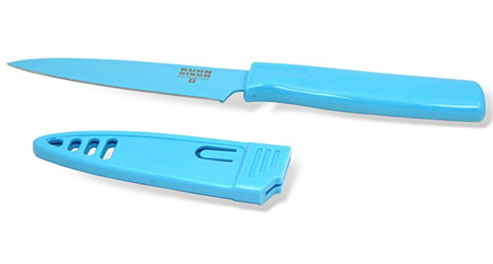
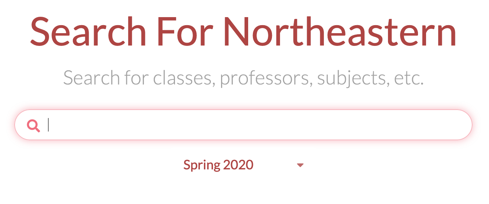
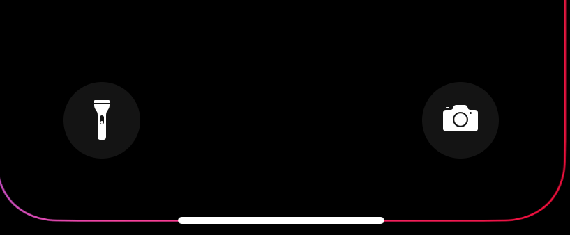
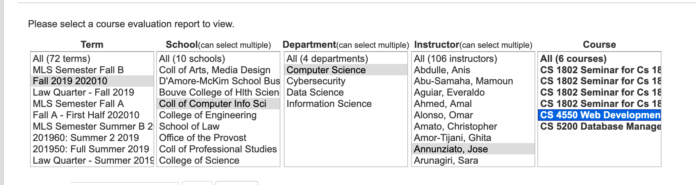

I3: Individual Assignment #3: UI Critique
Good User Interface Design
Kuhn Rikon Knife
Purpose:
To cut food for your meals. A long lasting knife that is supposed to be easy to transport and does not need to be sharpened often.
Why it’s good based on heuristic principles:
- Aesthetic and minimalist design: The knife itself is one solid color, a clear handle, and shark teeth blades that allow the user to clearly determine how to hold it.
- Error prevention: The quality of the metal is very durable and allows for no sharpening. This knife has lasted me four years of college without getting dull, and I cook a lot!
- System and the real world: the knife comes with a case for the blade. This allows for easy transport between locations. This further confirms the knife’s initial goals of being easy to transport.

SearchNEU → Search feature
Purpose:
To be able to look up classes, professors and other keywords to find curriculums that might interest you at Northeastern.
Why it's good based on heuristic principles:
- Aesthetic and minimalist design: The user has a single point of input which is the search bar. This allows for minimal confusion and easy access to information.
- Consistency and standards: Icons exist throughout the website and match standard customs. For example, the earth icon allows users to look at the course on the Northeastern website. This is a standard icon that is familiar and consistent with the main target group of students.
- Recognition: a clear banner states “search for classes, professors, subjects, etc.” all throughout your search process. This is a direct CTA that informs users about the current task at hand.

Bad User Interface Design
IPhone Home Screen Flashlight
Purpose:
To quickly access a flashlight from your home screen while the phone is unlocked.
Why it's bad based on heuristic principles:
- Aesthetic and minimalist design: In my opinion, part of design is the placement of things. The flashlight icon is located on the bottom left of the home screen, a place that is very easily accessible. This means that it can be hit when you don’t actually want to hit it.
- Error handling: Due to its location, it is hit often without any error handling. There is simply no error message, resulting in the flashlight turning on at random points when not needed.

TRACE Eval → Looking up professors or classes
Purpose:
To be able to rate and look up classes and professors to see the difficulties of the class and the professors.
Why it's bad based on heuristic principles:
- Aesthetic and minimalist design: To be able to look up a specific professor or course, you have to click so many times to get to it. First you have to choose the semester, then the school, the major, the professor and the class. This leads to a lot of mistakes and increased time to get what you want.
- System and the real world: There is little to no connection between the system and the real world. It is very difficult to find a place to look up the reviews because it is called “reports”. This does not match the user’s language. It is a somewhat technical term that doesn’t make a lot of sense.
